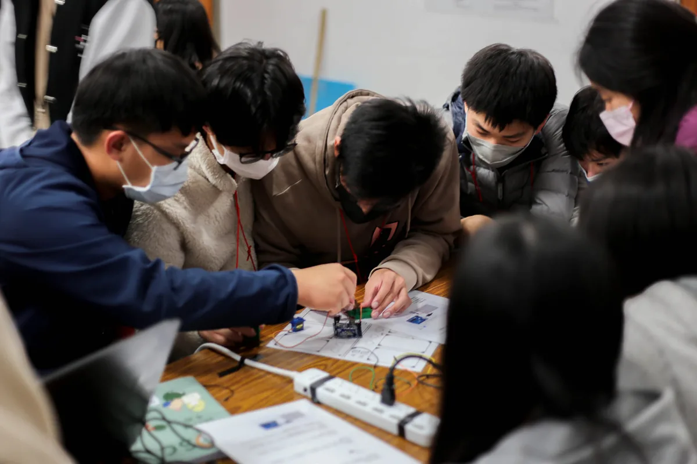

EVENT工科松
小工、小珂跟小瑩在了解了工程科學系在做什麼之後，就要來到工科松， 用學到的知識加上動手做的能力，做出一個個精彩的成果！
工科松是營隊中的特色活動，也是各位學員能體驗並實踐工科系精神的最佳機會。 活動以跑關的形式帶大家認識各領域小知識，並透過實作理解背後原理。
小工工科松竟然是這樣如此精彩的活動嗎？
小珂不但學專業知識，還能實作跟別人 PK 嗎？
小瑩啊啊啊！好興奮啊！
最後就是工科系最擅長的——Do Re Mi So！把看似無關的元素組合在一起， 讓不同小組來一場緊張刺激的對決！快來報名第 28th 成大工程科學研習營吧！